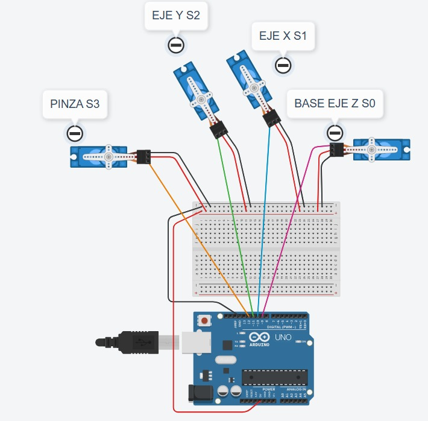
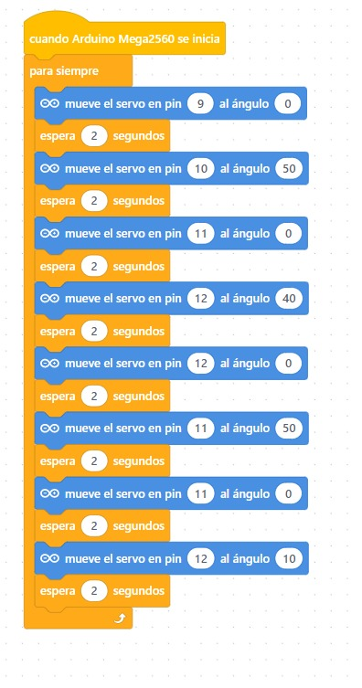
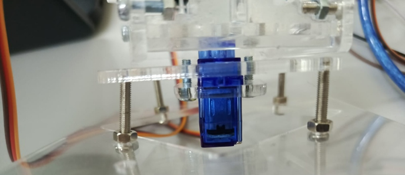
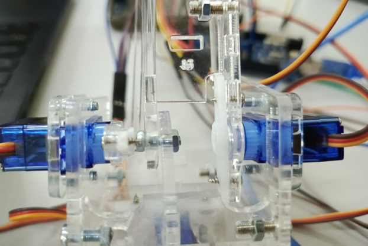
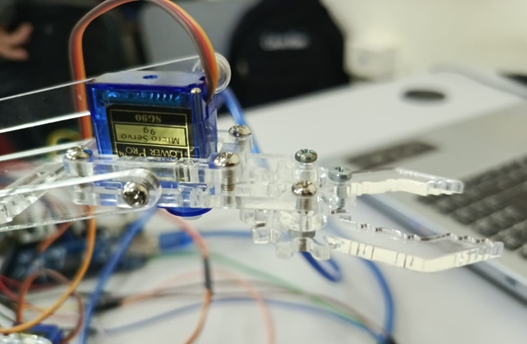

Materiales:
- 4 Servomotores 9G
- 1 Placa Arduino MEGA
- 1 Protoboard
- Cables tipo jumper
- 1 Módulo de alimentación o batería de 5V
- 1 Pulsador
- 1 Brazo robótico impreso o armado con piezas de cartón.
Diseño en Tinkercad

- Circuito en Tinkercad
- Crear un simulador del brazo robótico en Tinkercad, conectando servomotores a los pines digitales del Arduino.
Codificación en mBlock

- Crear el Programa con Bloques
- Dirígete al panel de bloques a la izquierda.
- Arrastra los bloques al área de trabajo.
Combínalos de forma lógica. Puedes usar bloques de:
- Eventos (ej. al presionar bandera verde)
- Control (esperar, repetir)
- Sensores
- Acción (mover servomotor, encender LED, etc.)
- Operadores y Variables para procesos más complejos.
- Probar el Código
- Si estás en modo tiempo real, haz clic en la bandera verde o ejecuta directamente.
- Si estás en modo de carga, haz clic en "Subir" para transferir el programa a la placa.
- Primero, se ensambló la base del brazo robótico, incorporando su respectivo servomotor, asegurándose de que quede bien fijado.
- Luego, se continuó con el ensamblaje de las piezas responsables del movimiento lateral de los brazos. Es importante verificar que todos los servomotores estén configurados en cero grados antes de ser instalados, para garantizar un funcionamiento adecuado.
- Por último, se colocó el servomotor en la parte superior, específicamente en la sección de las pinzas, permitiendo así el movimiento de apertura y cierre de la mano robótica.
